The Early Years — 2020–2021
Rocky growing up, in the order it happened — ten photographs from the family camera roll.
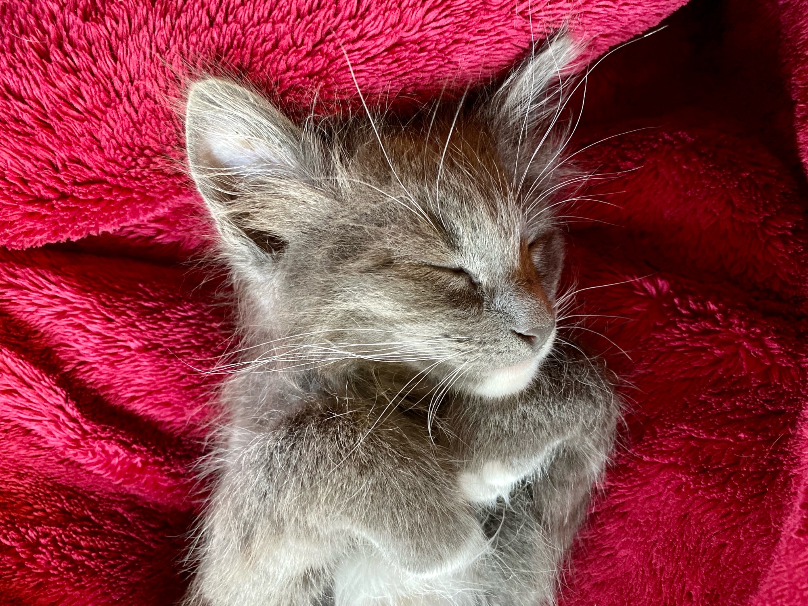
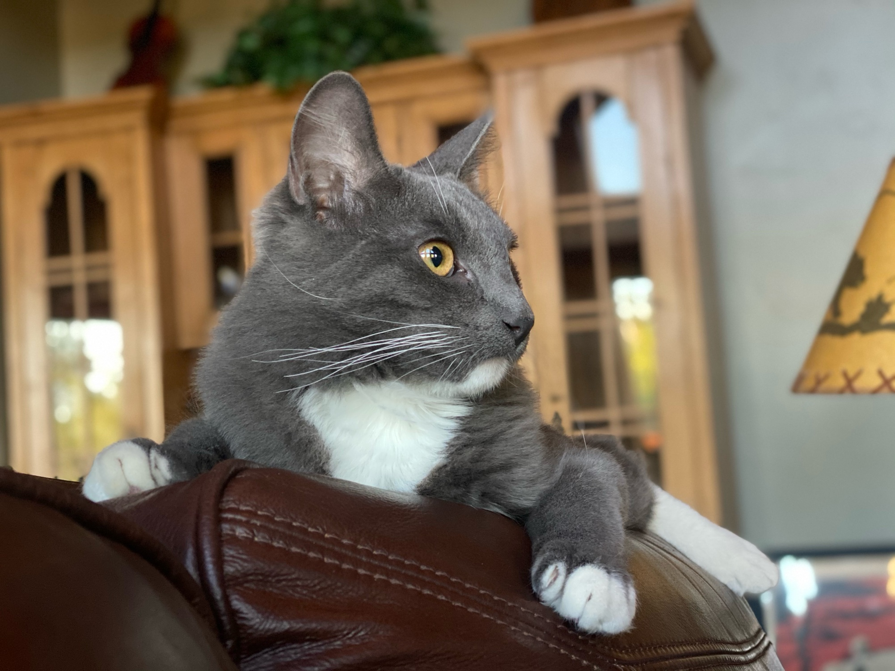
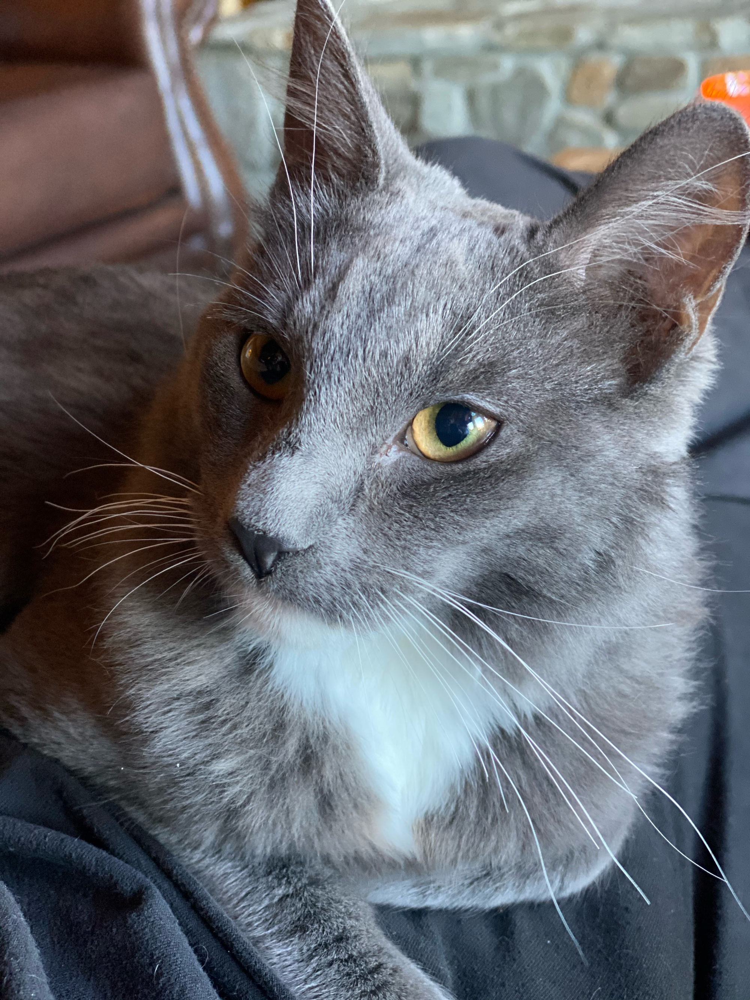
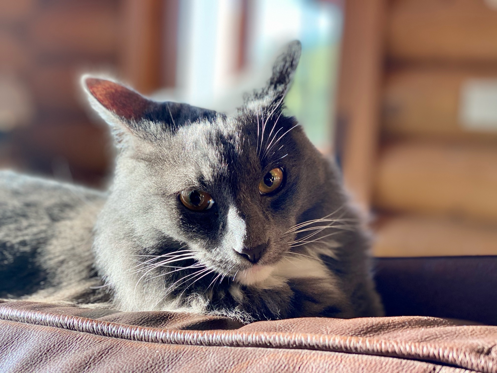
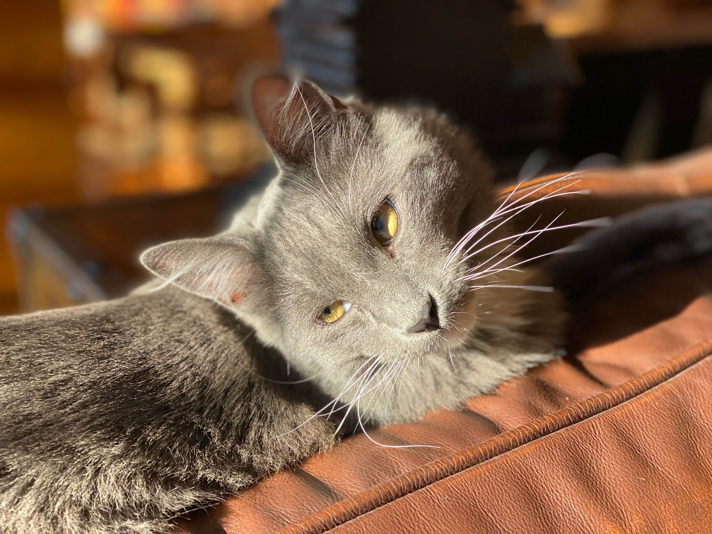
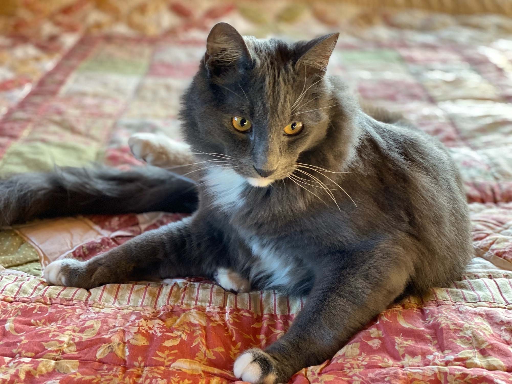
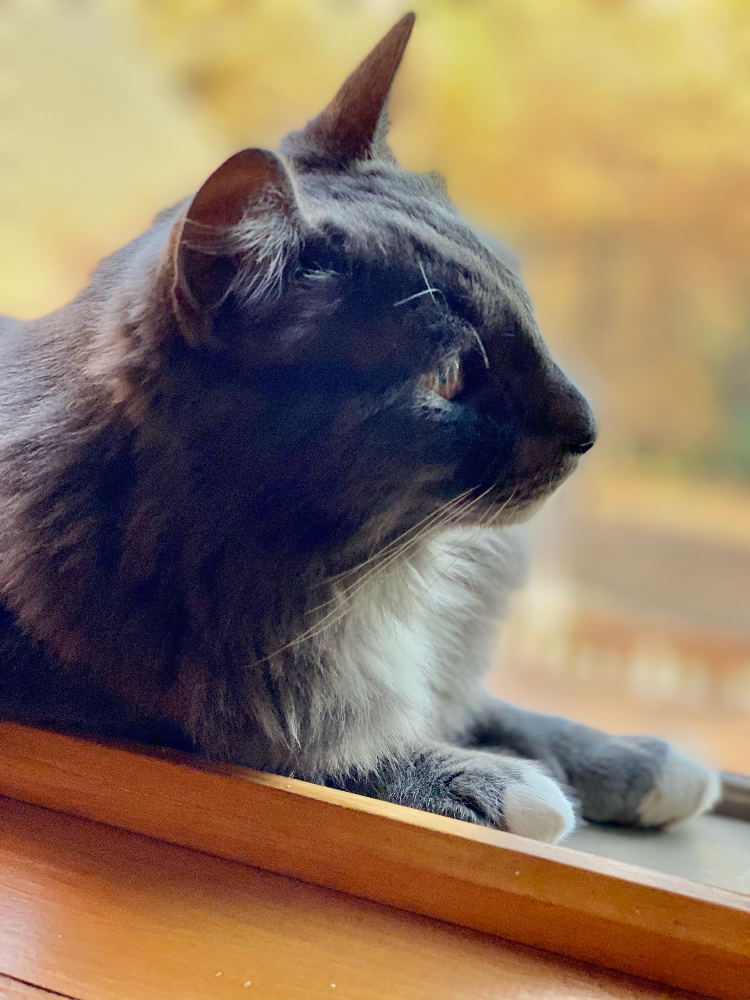
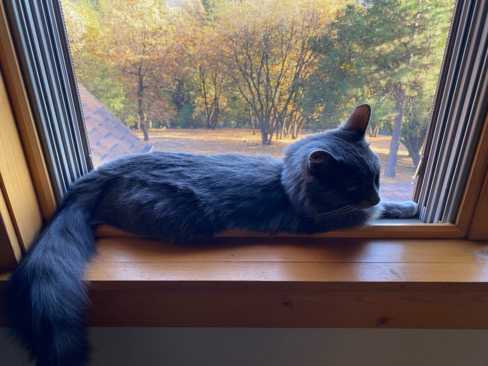
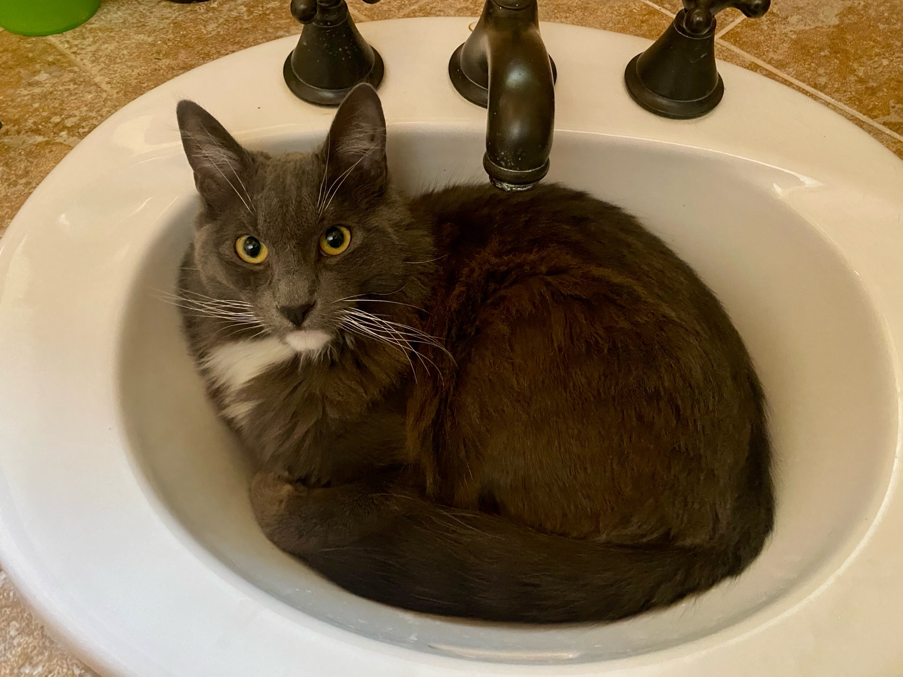
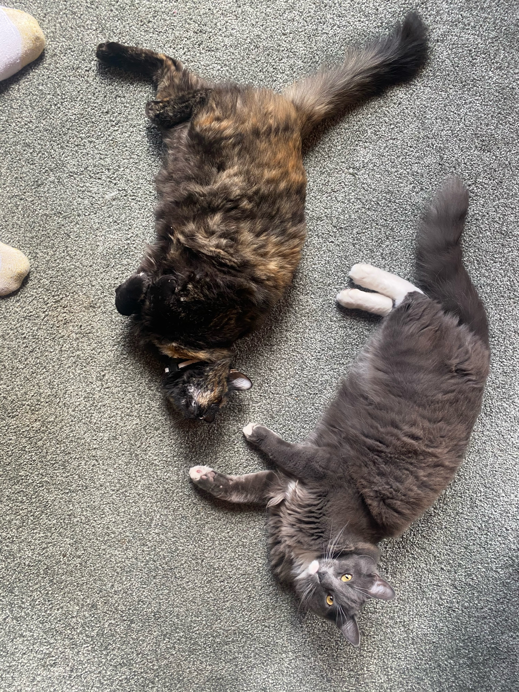
Rocky Today
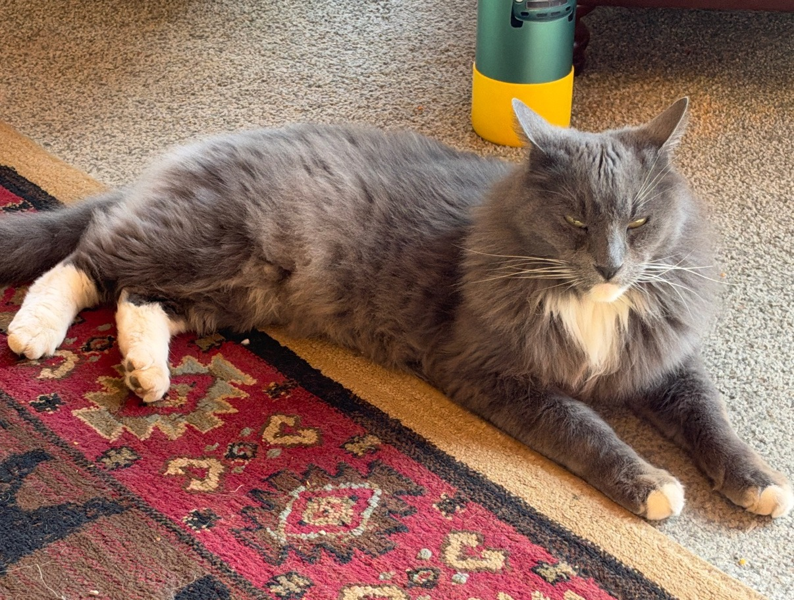
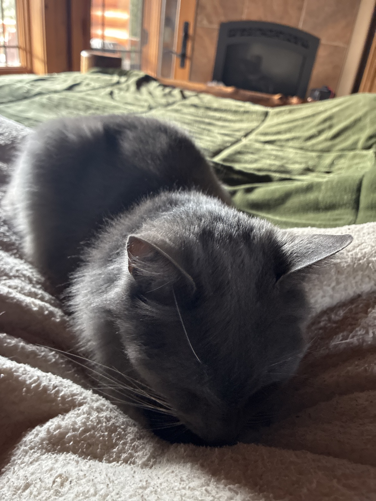
The Feature — as it ran in the paper, Nov 8, 2026
Rocky's people have long suspected Russian Blue in him, and the breed consistently lands on the "smartest cats" lists. What Russian Blues are known for isn't tricks — it's study. They learn a household's routines down to the minute, work out doors and cabinets, play fetch, and keep long memories: a guest who was kind to a Russian Blue months ago gets remembered, and so does a slight. It's a quieter kind of smart than the Bengal's chaos — observant, watchful, and loyal to one person above all others.
The honest caveat, because this paper prints one when it's owed: nobody has ever run a proper IQ test on a cat. Breed intelligence is breeder-and-owner lore, not lab science, and individual cats vary far more than breeds do.
And Rocky himself isn't a pure Russian Blue — his own portrait gives him away. Pure Russian Blues are strictly short-haired; Rocky's coat is long and plush, with a heavy neck ruff, and his white chest bib, white chin, white hind socks and white front toe tips rule out purebred on their own (the breed is solid blue, no white). What he does carry is the rest of the signature: green eyes, an even silver-cast blue coat, lavender-pink paw pads, and those big triangular ears. The best read: a Nebelung-type / longhaired blue mix — the Nebelung is literally the long-haired sibling breed of the Russian Blue — crossed with a white-marked domestic longhair. Honest label: a domestic longhair with strong Russian Blue / Nebelung traits.
Which leaves the Rocky twist his household loves best. The breed is famous for being cautious and easily startled — so Rocky's firm conviction that he is about to die at all times isn't him being dim. It's the smart-cat software running with the sensitivity turned all the way up. He has never been hurt a day in his life, and he still flinches at shadows. Vigilance, in a cat this observant, is a feature — even when it's aimed at a water bottle.
Featured Pets is a standing desk of The Fiddletown Gazette: each pet's front-page feature flies four days, and its gallery page stands. Nominations: email the paper at dave@dellaquila.com with "Gazette" in the subject, your pet's story plus photos.